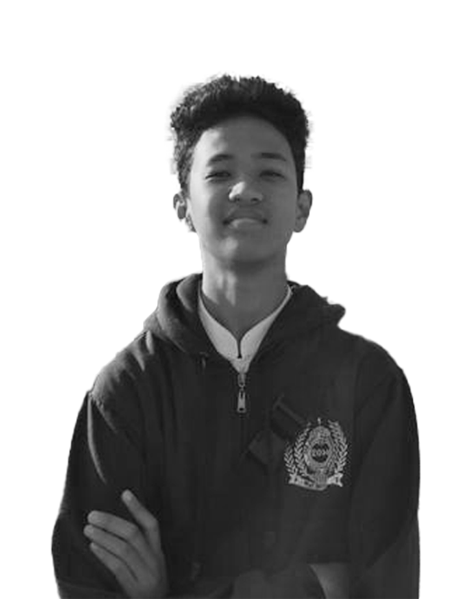

UnderGraduate Student
 berkuliah s1 di sistem informasi institut teknologi sepuluh nopember surabaya, menjadi pilihkanku karena ingin mengikuti jejak ayah yang dulunya juga berkuliah di universitas yang sama. bertemu dengan teman baru dan beradabtasi dengan suasana perkuliahan adalah masa masa yang sudah terlewati. kedepannya ingin menjadi manager di bidang marketing dan ingin mencoba memabangun sebuah startup untuk membuka lapangan kerja bagi orang banyak